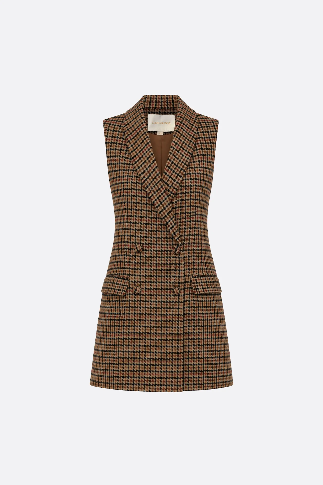
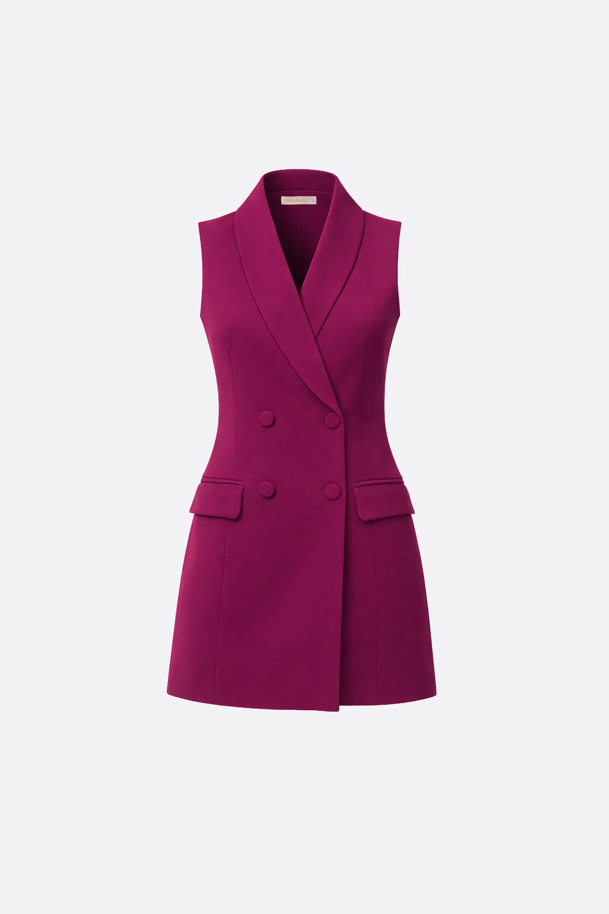
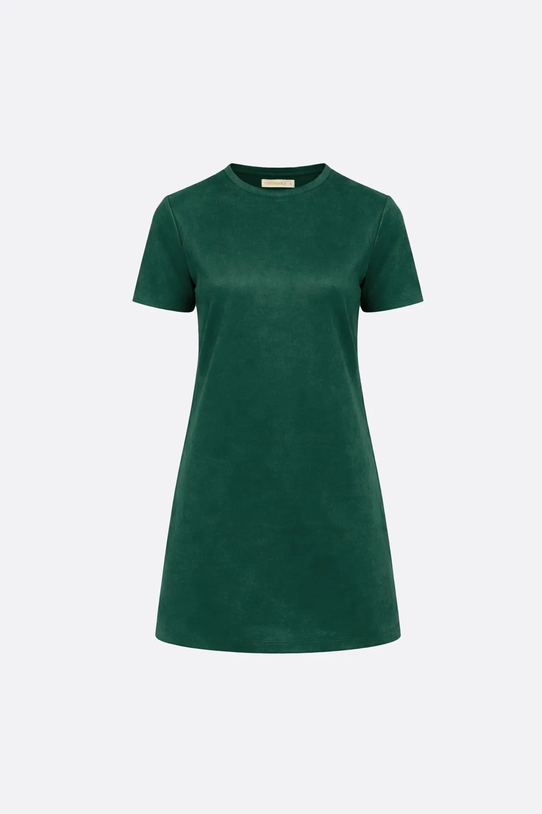
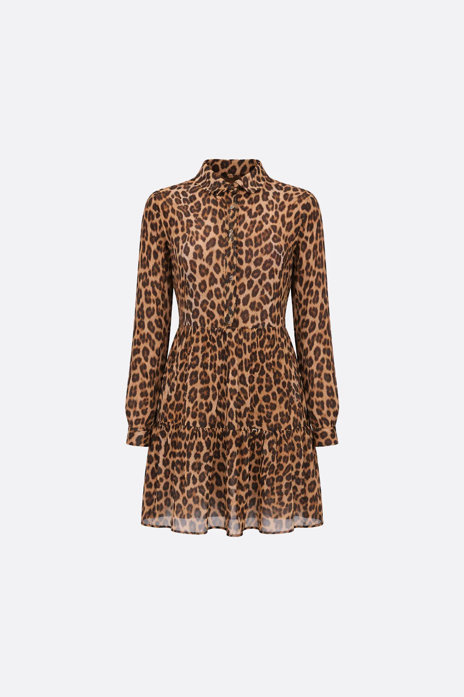
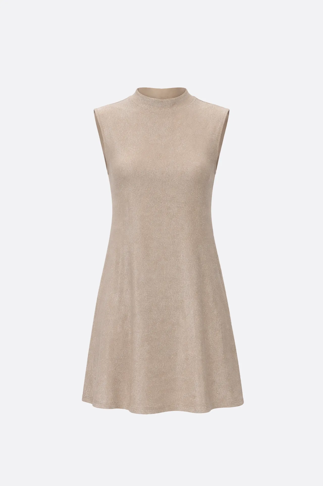
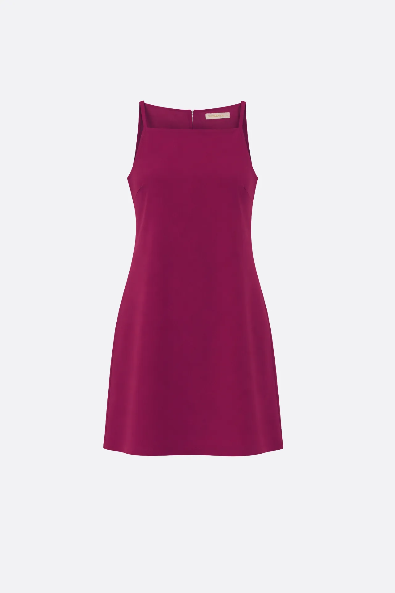
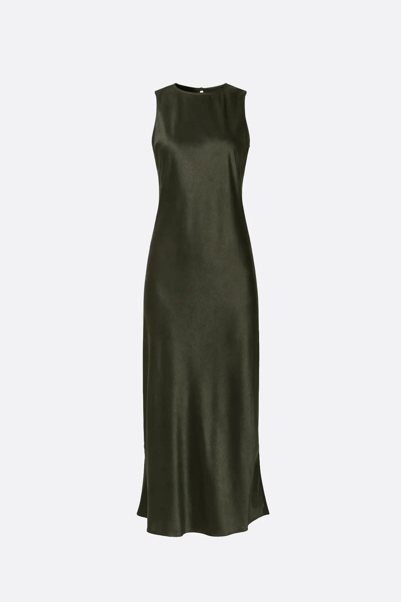
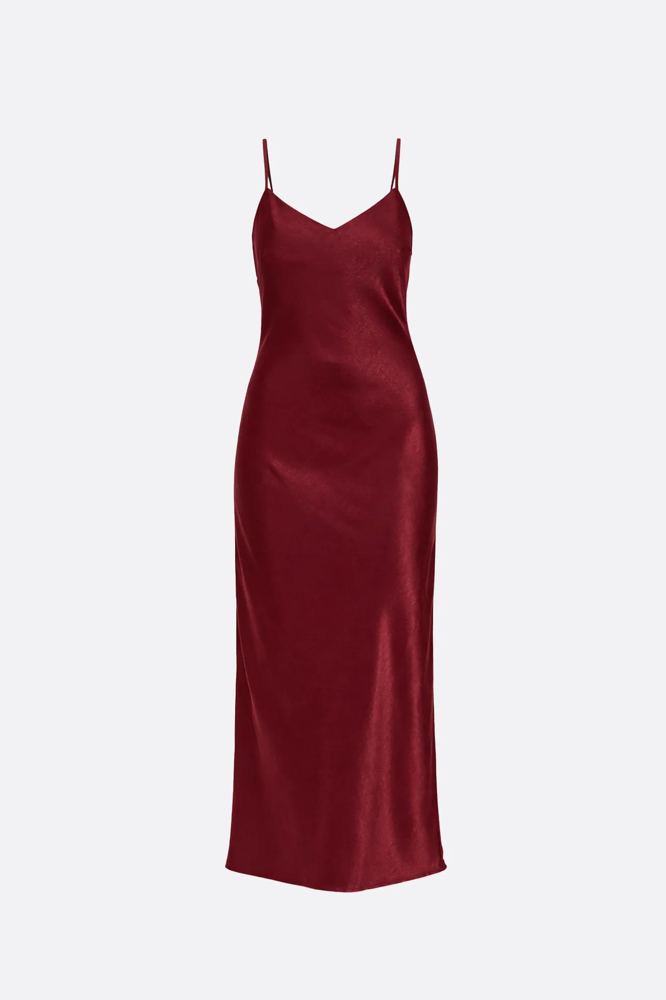
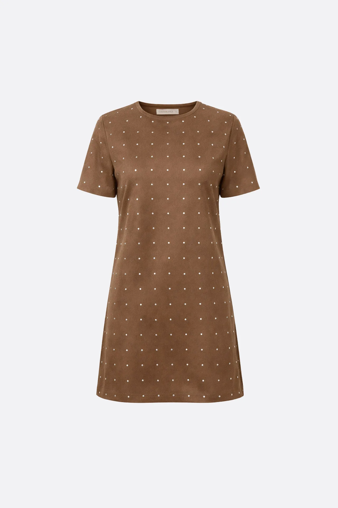

Vestido Almond
Vestido tipo chaleco sastrero, con forrería. Tiene apertura cruzada con cuatro botones forrados y bolsillos con tapa en el delantero.
$ 98.990
Vestidos largos, cortos y monos modernos pensados para cualquier ocasión.

Vestido tipo chaleco sastrero, con forrería. Tiene apertura cruzada con cuatro botones forrados y bolsillos con tapa en el delantero.
$ 98.990

Vestido corto tipo chaleco largo de cuello smocking. Forro interior a tono. Bolsillos ojal con tapa en delantero. Cierre frontal con botones forrados.
$ 79.990

Vestido corto de tela efecto gamuzado, cuenta con mangas cortas y escote redondo. Suave y suelto para mayor comodidad.
$ 54.990

Vestido camisero corto estampado en gasa crepé, tiene recortes en la falda con frunces.
$ 68.990

Vestido corto en jersey con lurex, sin mangas y con cuello alto.
$ 44.990

Vestido corto con forrería a tono. Tiene escote recto (tipo halter) y breteles finos. Apertura en espalda mediante un cierre invisible.
$ 52.990

Vestido midi en tejido satinado, con tajos en los bajos laterales y cierre en gota con botón en la espalda.
$ 68.990

Vestido largo confeccionado en tejido satinado. Escote pico y tirantes finos con reguladores.
$ 64.990

Vestido corto de tela efecto gamuzado, cuenta con mangas cortas y escote redondo. Delantero y mangas íntegramente cubierto con brillos termofusionados.
$ 69.990